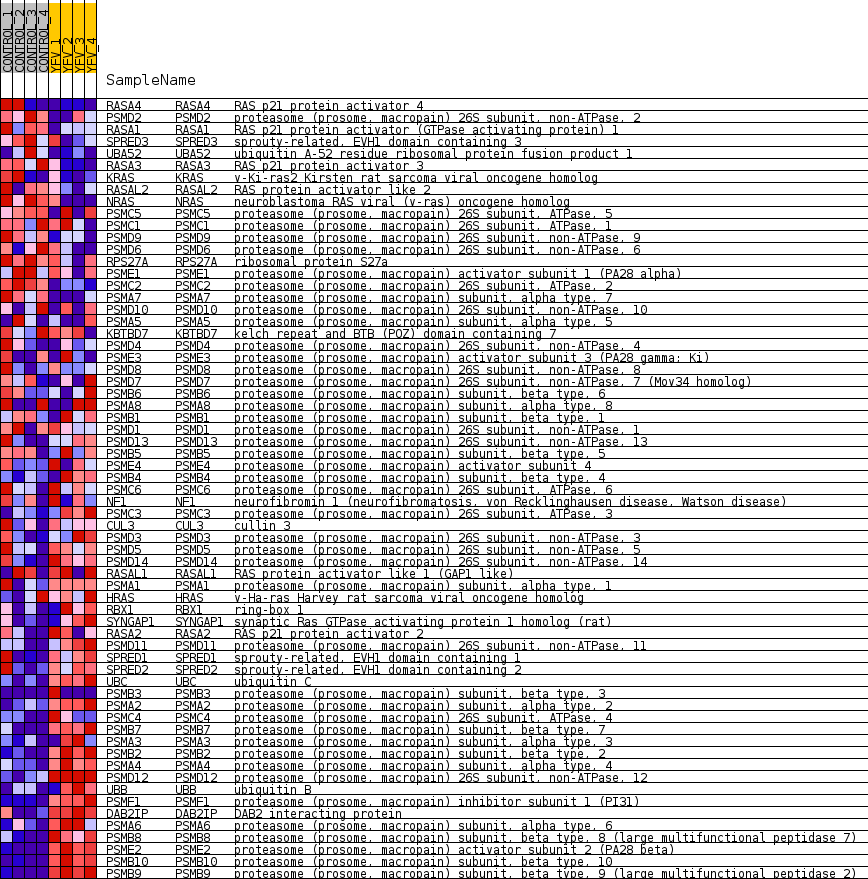
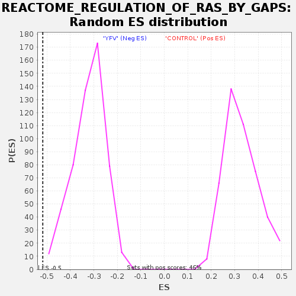

Profile of the Running ES Score & Positions of GeneSet Members on the Rank Ordered List
| Dataset | MATRIZ_GSE99081_collapsed_to_symbols.gsea_CLASE_99081.cls#CONTROL_versus_YFV |
| Phenotype | gsea_CLASE_99081.cls#CONTROL_versus_YFV |
| Upregulated in class | YFV |
| GeneSet | REACTOME_REGULATION_OF_RAS_BY_GAPS |
| Enrichment Score (ES) | -0.5177248 |
| Normalized Enrichment Score (NES) | -1.6108418 |
| Nominal p-value | 0.0 |
| FDR q-value | 0.06363777 |
| FWER p-Value | 0.865 |
| SYMBOL | TITLE | RANK IN GENE LIST | RANK METRIC SCORE | RUNNING ES | CORE ENRICHMENT | |
|---|---|---|---|---|---|---|
| 1 | RASA4 | RAS p21 protein activator 4 | 514 | 0.824 | -0.0054 | No |
| 2 | PSMD2 | proteasome (prosome, macropain) 26S subunit, non-ATPase, 2 | 711 | 0.738 | 0.0060 | No |
| 3 | RASA1 | RAS p21 protein activator (GTPase activating protein) 1 | 1086 | 0.621 | 0.0028 | No |
| 4 | SPRED3 | sprouty-related, EVH1 domain containing 3 | 1353 | 0.560 | 0.0042 | No |
| 5 | UBA52 | ubiquitin A-52 residue ribosomal protein fusion product 1 | 1969 | 0.488 | -0.0182 | No |
| 6 | RASA3 | RAS p21 protein activator 3 | 1977 | 0.487 | -0.0031 | No |
| 7 | KRAS | v-Ki-ras2 Kirsten rat sarcoma viral oncogene homolog | 1980 | 0.487 | 0.0124 | No |
| 8 | RASAL2 | RAS protein activator like 2 | 2486 | 0.415 | -0.0056 | No |
| 9 | NRAS | neuroblastoma RAS viral (v-ras) oncogene homolog | 2790 | 0.368 | -0.0126 | No |
| 10 | PSMC5 | proteasome (prosome, macropain) 26S subunit, ATPase, 5 | 3127 | 0.329 | -0.0228 | No |
| 11 | PSMC1 | proteasome (prosome, macropain) 26S subunit, ATPase, 1 | 3697 | 0.267 | -0.0495 | No |
| 12 | PSMD9 | proteasome (prosome, macropain) 26S subunit, non-ATPase, 9 | 3732 | 0.263 | -0.0432 | No |
| 13 | PSMD6 | proteasome (prosome, macropain) 26S subunit, non-ATPase, 6 | 3986 | 0.243 | -0.0510 | No |
| 14 | RPS27A | ribosomal protein S27a | 4134 | 0.232 | -0.0527 | No |
| 15 | PSME1 | proteasome (prosome, macropain) activator subunit 1 (PA28 alpha) | 4391 | 0.212 | -0.0618 | No |
| 16 | PSMC2 | proteasome (prosome, macropain) 26S subunit, ATPase, 2 | 4826 | 0.173 | -0.0831 | No |
| 17 | PSMA7 | proteasome (prosome, macropain) subunit, alpha type, 7 | 5238 | 0.134 | -0.1042 | No |
| 18 | PSMD10 | proteasome (prosome, macropain) 26S subunit, non-ATPase, 10 | 5332 | 0.127 | -0.1059 | No |
| 19 | PSMA5 | proteasome (prosome, macropain) subunit, alpha type, 5 | 5659 | 0.102 | -0.1228 | No |
| 20 | KBTBD7 | kelch repeat and BTB (POZ) domain containing 7 | 5878 | 0.086 | -0.1335 | No |
| 21 | PSMD4 | proteasome (prosome, macropain) 26S subunit, non-ATPase, 4 | 6348 | 0.049 | -0.1609 | No |
| 22 | PSME3 | proteasome (prosome, macropain) activator subunit 3 (PA28 gamma; Ki) | 6661 | 0.029 | -0.1793 | No |
| 23 | PSMD8 | proteasome (prosome, macropain) 26S subunit, non-ATPase, 8 | 6710 | 0.026 | -0.1815 | No |
| 24 | PSMD7 | proteasome (prosome, macropain) 26S subunit, non-ATPase, 7 (Mov34 homolog) | 6854 | 0.018 | -0.1897 | No |
| 25 | PSMB6 | proteasome (prosome, macropain) subunit, beta type, 6 | 7048 | 0.008 | -0.2014 | No |
| 26 | PSMA8 | proteasome (prosome, macropain) subunit, alpha type, 8 | 9584 | -0.007 | -0.3579 | No |
| 27 | PSMB1 | proteasome (prosome, macropain) subunit, beta type, 1 | 9745 | -0.014 | -0.3674 | No |
| 28 | PSMD1 | proteasome (prosome, macropain) 26S subunit, non-ATPase, 1 | 10102 | -0.030 | -0.3884 | No |
| 29 | PSMD13 | proteasome (prosome, macropain) 26S subunit, non-ATPase, 13 | 10422 | -0.053 | -0.4064 | No |
| 30 | PSMB5 | proteasome (prosome, macropain) subunit, beta type, 5 | 10473 | -0.058 | -0.4077 | No |
| 31 | PSME4 | proteasome (prosome, macropain) activator subunit 4 | 10799 | -0.085 | -0.4250 | No |
| 32 | PSMB4 | proteasome (prosome, macropain) subunit, beta type, 4 | 10839 | -0.088 | -0.4246 | No |
| 33 | PSMC6 | proteasome (prosome, macropain) 26S subunit, ATPase, 6 | 11010 | -0.102 | -0.4319 | No |
| 34 | NF1 | neurofibromin 1 (neurofibromatosis, von Recklinghausen disease, Watson disease) | 11168 | -0.117 | -0.4378 | No |
| 35 | PSMC3 | proteasome (prosome, macropain) 26S subunit, ATPase, 3 | 11528 | -0.149 | -0.4553 | No |
| 36 | CUL3 | cullin 3 | 11760 | -0.170 | -0.4641 | No |
| 37 | PSMD3 | proteasome (prosome, macropain) 26S subunit, non-ATPase, 3 | 11846 | -0.178 | -0.4637 | No |
| 38 | PSMD5 | proteasome (prosome, macropain) 26S subunit, non-ATPase, 5 | 11911 | -0.185 | -0.4617 | No |
| 39 | PSMD14 | proteasome (prosome, macropain) 26S subunit, non-ATPase, 14 | 11924 | -0.186 | -0.4565 | No |
| 40 | RASAL1 | RAS protein activator like 1 (GAP1 like) | 12563 | -0.251 | -0.4879 | No |
| 41 | PSMA1 | proteasome (prosome, macropain) subunit, alpha type, 1 | 12891 | -0.287 | -0.4990 | No |
| 42 | HRAS | v-Ha-ras Harvey rat sarcoma viral oncogene homolog | 12934 | -0.292 | -0.4922 | No |
| 43 | RBX1 | ring-box 1 | 13011 | -0.302 | -0.4873 | No |
| 44 | SYNGAP1 | synaptic Ras GTPase activating protein 1 homolog (rat) | 13504 | -0.365 | -0.5061 | Yes |
| 45 | RASA2 | RAS p21 protein activator 2 | 13530 | -0.368 | -0.4958 | Yes |
| 46 | PSMD11 | proteasome (prosome, macropain) 26S subunit, non-ATPase, 11 | 13564 | -0.374 | -0.4859 | Yes |
| 47 | SPRED1 | sprouty-related, EVH1 domain containing 1 | 13989 | -0.439 | -0.4981 | Yes |
| 48 | SPRED2 | sprouty-related, EVH1 domain containing 2 | 14150 | -0.472 | -0.4929 | Yes |
| 49 | UBC | ubiquitin C | 14182 | -0.479 | -0.4795 | Yes |
| 50 | PSMB3 | proteasome (prosome, macropain) subunit, beta type, 3 | 14438 | -0.500 | -0.4793 | Yes |
| 51 | PSMA2 | proteasome (prosome, macropain) subunit, alpha type, 2 | 14672 | -0.535 | -0.4766 | Yes |
| 52 | PSMC4 | proteasome (prosome, macropain) 26S subunit, ATPase, 4 | 14766 | -0.557 | -0.4645 | Yes |
| 53 | PSMB7 | proteasome (prosome, macropain) subunit, beta type, 7 | 14794 | -0.565 | -0.4481 | Yes |
| 54 | PSMA3 | proteasome (prosome, macropain) subunit, alpha type, 3 | 14958 | -0.609 | -0.4388 | Yes |
| 55 | PSMB2 | proteasome (prosome, macropain) subunit, beta type, 2 | 15120 | -0.662 | -0.4275 | Yes |
| 56 | PSMA4 | proteasome (prosome, macropain) subunit, alpha type, 4 | 15508 | -0.833 | -0.4248 | Yes |
| 57 | PSMD12 | proteasome (prosome, macropain) 26S subunit, non-ATPase, 12 | 15525 | -0.844 | -0.3989 | Yes |
| 58 | UBB | ubiquitin B | 15642 | -0.918 | -0.3767 | Yes |
| 59 | PSMF1 | proteasome (prosome, macropain) inhibitor subunit 1 (PI31) | 15701 | -0.986 | -0.3488 | Yes |
| 60 | DAB2IP | DAB2 interacting protein | 15739 | -1.023 | -0.3184 | Yes |
| 61 | PSMA6 | proteasome (prosome, macropain) subunit, alpha type, 6 | 15762 | -1.053 | -0.2861 | Yes |
| 62 | PSMB8 | proteasome (prosome, macropain) subunit, beta type, 8 (large multifunctional peptidase 7) | 16014 | -1.655 | -0.2487 | Yes |
| 63 | PSME2 | proteasome (prosome, macropain) activator subunit 2 (PA28 beta) | 16061 | -1.905 | -0.1907 | Yes |
| 64 | PSMB10 | proteasome (prosome, macropain) subunit, beta type, 10 | 16150 | -2.694 | -0.1100 | Yes |
| 65 | PSMB9 | proteasome (prosome, macropain) subunit, beta type, 9 (large multifunctional peptidase 2) | 16195 | -3.614 | 0.0027 | Yes |

